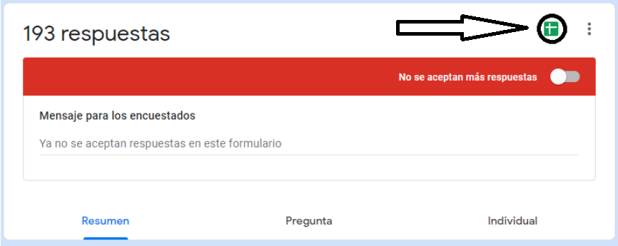

RESULTADO
 PASOS
PASOS1. Descargar el html y seleccionarlo:
1.1:
1.2:
1.3: guarda el archivo seleccionado en alguna carpeta:
1.4: pulsa en "seleccionar archivo", seleccionalo y pulsa cargar.
2. Selecciona la agrupación:
2.1: Vuelve al excel para saber sobre que columnas agrupar e introducelas poniendo los numeros separados por comas sin espacios --> 1,2,3
Esto sirve para ver que han contestado a alguna pregunta por edad por genero o para ver que han contestado a una pregunta segun lo que han contestado a otra. En el ejemplo si quisiera agrupar en genero y sector pondría 1,3 o si quisiera ver que contestan a la seis los que han dicho No a la cuatro pondría 4
Esto sirve para ver que han contestado a alguna pregunta por edad por genero o para ver que han contestado a una pregunta segun lo que han contestado a otra. En el ejemplo si quisiera agrupar en genero y sector pondría 1,3 o si quisiera ver que contestan a la seis los que han dicho No a la cuatro pondría 4
2.2: Quedaría como en la siguiente imagen:
3. Selecciona columna a estudiar:
3.1En este caso solo debes seleccionar una sin poner comas ni nada, solo el número que corresponda a la pregunta que quieres estudiar.
Si las personas encuestadas solo podían seleccionar una deja el tipo como está, si podían seleccionar varias respuestas cambialo a multirrespuesta.
Estos parámetros se pueden cambiar y darle a "ver estadísticas" para no tener que hacerlo de nuevo al completo
Si las personas encuestadas solo podían seleccionar una deja el tipo como está, si podían seleccionar varias respuestas cambialo a multirrespuesta.
Estos parámetros se pueden cambiar y darle a "ver estadísticas" para no tener que hacerlo de nuevo al completo
3.2: Quedaría como en la imagen. tras esto le das a ver estadísticas y ya lo obtienes.